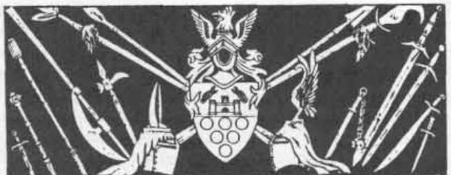

尼斯图尔的法术 · Nystul’s Spells
Nystul 的舞动幽光术（变化系）
解释／描述： 此法术会创造一小点完全受施法者控制的光。光点发出的亮度可以按施法者意愿增强或减弱，从光亮术的亮度到蜡烛的昏光不等。幽光可以按施法者的指示从一处飘到另一处，只要始终留在法术射程内。幽光可以被召到施法者头顶，作为方便的阅读灯。幽光术不能附着在物体或生物上，只能作为悬在空中的光点存在。材料成分是一只活萤火虫。
Nystul 的闪光术（塑能系）
解释／描述： 此法术会在一个半径 10 英尺的球体内制造突然的明亮闪光。作用范围内未通过对法术豁免检定的所有生物会目盲 1d4 轮。通过豁免检定的生物仅会晕眩 1d4 轮，所有生命骰受到 −2 处罚。它们在近战中也会失去平衡，因此对晕眩生物发动的任何攻击都获得 +2 命中修正。位于球体外、面向闪光的生物不会受到任何不良影响。没有眼睛的生物不受此法术影响。
Nystul 的黑微点术（塑能系）
解释／描述： 此法术会将一小点来自负能量位面的微观能量召唤到施法者手中。施法者必须立即以 +2 加值进行一次对死亡魔法的豁免检定，才能控制黑微点。如果施法者通过检定，黑微点会在法师手中休眠一轮，积蓄力量。在此期间施法者不能做任何其他事情，因为必须全神贯注于黑微点。如果施法者在此期间集中被打断，黑微点会被驱散。一轮结束时，法术达到完全力量，黑微点可以被掷向法术射程内的一个生物。黑微点会自动击中目标，在黑暗与寒冷的爆发中爆炸，造成 2d6 点伤害，再加上施法者每个等级 1 点伤害。亡灵，以及来自负能量位面或下层外位面的生物，不受黑微点影响。
如果施法者未通过最初的对死亡魔法豁免检定，法师就会失去对微点的控制。它会立刻在施法者手中爆炸，造成 1 点伤害，并使法师麻痹 1d4 轮。材料成分是一小片取自亡灵骨骼的骨头。
Nystul 的灼热光束术（塑能系）
解释／描述： 此法术从正能量位面抽取一部分能量到施法者手中，随后可以将其作为一道宽 1 英尺、射程最多为 30 英尺 + 每等级 10 英尺的光线发射出去。除了亡灵之外，被光束击中的生物都有权进行豁免检定。成功通过检定的生物只会被光束擦中，晕眩 1d4 轮，生命骰受到 −2 处罚，护甲等级受到 +2 处罚。未通过检定的生物会被光束正面完全击中，目盲 2d4 轮，生命骰受到 −4 处罚，AC 受到 +4 处罚。被光束击中的亡灵无权豁免，也不会晕眩或目盲，但会受到 4d6 点伤害。
Nystul 的水晶匕首术（塑能系－咒法系）
解释／描述： 此法术会将一把由准元素矿物位面物质组成的匕首召唤到施法者手中，其中强烈注入了来自正物质位面的能量。水晶匕首没有命中加值，在近战中击中对手时造成 1d4 + 2 点伤害。对亡灵和来自下层外位面的生物，匕首造成 1d4 + 3 点伤害。如果水晶匕首对亡灵或下层位面生物造成最大伤害，该怪物会在接下来的近战轮中麻痹，而匕首会消失。材料成分是一把用精制铅水晶制成、价值 250 金币的微型匕首。
Nystul 的水晶短剑术（塑能系－咒法系）
解释／描述： 此法术创造出一种类似于 2 级水晶匕首术所描述的武器。短剑带有微弱魔法，在攻击骰上提供 +1 加值。短剑命中时造成 1d4 + 2 点伤害。对亡灵和下层外位面的怪物，短剑成功命中时造成 1d4 + 3 点伤害。如果水晶短剑造成最大伤害，怪物会麻痹到命中后的下一轮结束。材料成分是一把用铅水晶制成、价值 350 金币的微型匕首。
Nystul 的迅捷灭火术（塑能系）
解释／描述： 这是影响普通火焰术的更强版本，能让施法者迅速扑灭大火。施法时，会从灰烬准位面瞬间将反能量抽向火焰。每个施法者等级最多 10 英尺范围的非魔法火焰都能在短短一段内熄灭，因此此法术非常适合对付森林火灾和灌木火灾。对魔法火焰，此法术的效果较弱。扑灭魔法火焰的几率只有 60%，而且无论施法者等级如何，最多只能熄灭 10 码乘 10 码的区域。此法术对火焰生物或从生物身体喷出的火焰不起作用，例如火元素、火焰咕噜或 VI 型恶魔。材料成分是一小撮与盐混合的冷灰。
Nystul 的黄金揭示术（变化系）
解释／描述： 借助此法术，法师可以揭示锥形区域内隐藏、藏匿或隐形的生物。被藏匿的生物周围会被一道金色光环包围，光环以生物为中心直径 1 英尺向外发光，使其很容易被看见。法师可以在一轮内对该区域进行完整的 360 度扫视搜索。此法术可能揭示出躲在阴影中的盗贼、藏在自然地形中的野蛮人，或躲在障碍物后的生物。此法术会在区域内的隐形、错相、以太、二维或星界生物周围制造辉光，也会在使用精灵斗篷、混融长袍或变色龙之力戒指的生物周围制造辉光。不能针对受到黄金揭示术影响的目标进行豁免检定，尽管成功的魔法抗性可以保护生物，不被法术勾画出轮廓。材料成分是一只用蜡封羊皮纸包裹、内含萤光虫的盒子。
Nystul 的辉光棱杖术（塑能系）
解释／描述： 法师施放此法术时，会将一根由辉光准元素位面抽取的能量形成的细棱杖召唤到施法者手中。施法者可以选择让棱杖呈现彩虹七色中的任意一种。棱杖的攻击形式对应所选颜色，类似于辉光准元素生物的攻击，具体如下：
- 红色棱杖： 寒冷能量（对火焰类生物 +1 点伤害；对寒冷类生物不造成伤害）。
- 橙色棱杖： 热能（对寒冷类生物 +1 点伤害；对火焰类生物不造成伤害）。
- 黄色棱杖： 酸性伤害（对法术进行豁免检定则不受伤害）。
- 绿色棱杖： 中和毒素（如牧师法术）。
- 蓝色棱杖： 电能（对金属护甲的敌人 +10 点伤害）。
- 靛色棱杖： 亡灵专用（只有亡灵会受到伤害）。
- 紫色棱杖： 植物专用（只有植物会受到伤害）。
棱杖命中时会造成基础 2d4 点伤害，再加上施法者每个等级 1 点伤害。伤害类型对应棱杖的颜色。棱杖颜色在施法时选择，此后不能改变。生物不能针对辉光棱杖的效果进行豁免检定。棱杖会自动击中在该近战轮成功击中施法者的任何生物；否则，施法者必须使用自己的 THAC0 来确定是否成功击中敌人。材料成分是一枚水晶棱镜（施法后会碎裂）和一组七根小型银棒。
Nystul 的黑光爆发术（塑能系）
解释／描述： 这个危险的法术会瞬间从负物质位面带来一股能量爆炸。作用范围内的生物每个施法者等级受到 1d4 点伤害；如果对死亡魔法的豁免检定成功，则只受到一半伤害。未通过豁免检定的受影响生物还会如同受到缓慢术影响一样，缓慢 1d4 轮。来自正物质位面或上层外位面的生物，每个施法者等级额外受到 1 点伤害，并且豁免检定以 −2 进行。这类生物若未通过豁免，还会被震慑 1d4 轮，而不是缓慢。法师总有 10% 的几率失去对法术的控制，此时作用范围内反弹的一道射线会击中施法者，使其受到法术攻击。亡灵永远不受此法术影响。材料成分是取自食尸鬼或食尸鬼王墓穴的一小块泥土。
Nystul 的 Grue 召唤术（咒法／召唤系）

解释／描述： 此法术实际上是一组四个危险法术，会从四个元素位面之一召唤一只 grue——harginn、ildriss、chaggrin 或 varrdig：
| 元素位面 | 材料成分 |
|---|---|
| 空气 | 香 |
| 土 | 软黏土 |
| 火 | 硫磺 |
| 水 | 海水 |
想要召唤哪一种 grue，就必须使用对应的材料成分。召唤类型必须在施法者记忆法术之前决定。Grue 以不值得信任且难以控制而臭名昭著，因此施法者必须依靠的不只是集中精神，才能让 grue 服从命令。Grue 一被召唤，就会向施法者要求服务报酬。提供的报酬必须至少是价值 500 金币、且对 grue 有兴趣的物品，否则 grue 会被激怒并立即攻击施法者。如果 grue 对报酬满意，它会在法术持续期间勉强为施法者完成一项服务。如果 grue 觉得命令令人不快，它会设法破坏施法者的命令，或者公然违抗命令。
Nystul 的光爆术（塑能系）
解释／描述： 此法术会召唤来自正物质位面的能量爆发。所有位于突然爆发的能量之内或面向它的生物都会目盲一轮，且无豁免检定。没有眼睛的生物不会目盲。此外，作用范围内所有亡灵、来自负物质位面的生物或来自下层外位面的存在，每个施法者等级受到 1d6 点伤害。此类生物若通过豁免检定，只承受一半伤害，但亡灵的豁免检定以 −2 进行。材料成分是一枚价值 500 金币的小型实心金球，法术消散后会被摧毁。
Nystul 的包覆黑暗术（塑能系－变化系）
解释／描述： 此法术会在法师周围创造一个半径 20 英尺、无法穿透的黑暗区域。虽然施法者可以毫无困难地看见黑暗区域之内和穿过黑暗区域的东西，其他人却无法看穿这层包覆，甚至红外视觉或超视觉也不行。此外，球体内部还存在一种扭曲，看起来就像施法者拥有移位兽的移位能力。除了黑暗处罚外，施法者受到攻击时还会受到 −2 处罚。
Nystul 的瞬间日光术会抵消此法术。材料成分是一滴沥青、一根黑猫的胡须，以及一小撮移位兽皮毛。
Nystul 的辉光拱门术（变化系）
解释／描述： 此法术会创造一道在施法者张开的双手之间拱起的闪烁彩虹光。一旦彩虹成形，施法者就可以从彩虹发射一道宽 1 英尺的射线，瞄准距离法师每等级 10 码以内的一个生物。射线可以呈现从辉光准位面抽取的七种能量颜色中的一种。
- 红色： 寒冷能量（对火焰类生物 +1 点伤害；若目标是寒冷类则不造成伤害）。
- 橙色： 热能（对寒冷类生物 +1 点伤害；若目标是火焰类则不造成伤害）。
- 黄色： 酸性伤害（通过对法术的豁免检定则不受伤害）。
- 绿色： 中和毒素（如牧师法术）。
- 蓝色： 电能（对金属护甲的敌人 +10 点伤害）。
- 靛色： 亡灵专用（只有亡灵会受到伤害）。
- 紫色： 植物专用（只有植物会受到伤害）。
射线会造成每个施法者等级 1d6 点伤害，伤害类型与射线颜色相对应。如果生物通过豁免检定，只受到一半伤害。法师必须集中精神维持辉光拱门，因此任何打破施法者集中的攻击都会驱散彩虹，并阻止施法者发射射线。材料成分是一枚水晶棱镜（施法后会破碎）和一块中心钻有针孔的小黑板。